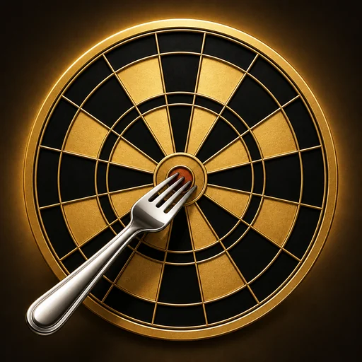

Food & Drink
Fork It: Restaurant Picker
Where to eat? Fork It.
Can't decide where to eat? Fork It is a restaurant picker and restaurant roulette that picks one random restaurant nearby — a real, open place with photos, Google ratings and reviews.
How it works
- Pick a vibe: fast food, sit-down, café, Asian, Mexican, pizza, bar or fine dining (categories adapt to your country and language)
- Or leave it wide open and let Fork It surprise you
- Tap Fork It for a random restaurant pick nearby
- Not feeling it? Fork Again from the same search
Filters that matter
- Open now, minimum rating and price level
- Search radius in miles or km
- Try Something New skips places you've already been
- Delivery mode shows only places that deliver
- Optional lunch and dinner reminders, off until you turn them on
Go or order in
- One tap for directions in Google Maps
- Or order through the restaurant or a supported delivery app
Remember the good ones
- History of the places you picked
- Save favorites, or fork only from your favorites
- Thumbs up or down to teach Fork It what you like, and never show a place again
- Weekly streak and new places tried
- Share a photo card with the rating and a Google Maps link
Fork It is free with ads and includes free picks every day. Fork It Plus is a one-time purchase that removes ads and gives you more picks per day. No account, no sign-up. Fork It is on Google Play for Android.